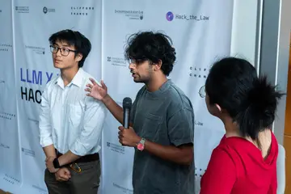
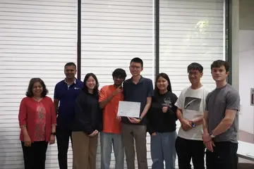
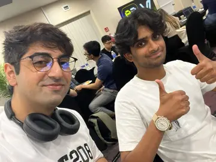
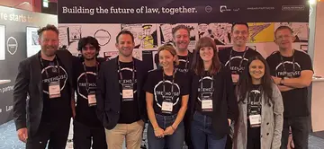

The full map
Every stop so far
The main page tells the story. This is the whole logbook: every role, prize and course, newest first.
Work
-
Aug 2025 to now
Automation Project Manager, part-time
Innovi Advisors, a UK accountancy practice
I own the firm's AI programme, from partner discovery through to staff using it.
I interviewed the partners to find where staff time went and worked out why 15 draft agents had stalled. They approved the phased plan I presented. Then I built Oracle, one agent staff brief like a junior: it asks clarifying questions and routes the work, so nobody has to pick a tool. The automation is capped on purpose so a person makes the judgement calls.
I run the staff training, built Alfred, a support agent that points colleagues to the right tool, wrote the firm's whitepaper on AI-assisted accounts preparation and started its AI policy, based on ISO/IEC 42001. Now I'm leading the rebuild of Oracle as a product the firm owns.
Case study: Fifteen agents, one front desk -
Aug 2026
AI discovery and adoption, client work through Innovi
A national UK pharmacy group, GPhC-regulated, about £500m turnover
My first client of my own. I ran three discovery days on site with Finance and HR, reporting to the Executive Director.
Three Microsoft 365 Copilot agents shipped in three days, and HR staff built two of them after a one-hour session with me. Then I wrote and sent the discovery letter: what shipped, what it needs to work, and who should own the next phase.
Case study: Ten things I learned -
May to Aug 2024
Builder and facilitator
Treehouse Innovation, London and Cardiff
Project-managed a booth for the Futures Lab at Legal Tech Talk (2,500+ attendees). I built the app that drew visitors' futures of the legal industry, and a tool that digitised the workshop's facilitation cards.
I helped build a workshop on how different personas feel about where the industry is going, and co-authored the published report.
The Futures Lab report -
Feb to Mar 2024
Digital Automation Insight
Highfield HR, Bridgend
Used design thinking to find the pain points in writing employee contracts, then prototyped a low-cost web app to automate it that the firm could offer its own clients. I also showed the staff how to use AI in their work.
-
Jun to Sep 2023
Design coach intern
Treehouse Innovation, London
Designed games and interactive exercises for a 200-person corporate event on a manufacturer's operating model review. I also researched cognitive biases for a gaming company project and built a prototype app for a risk and compliance breakout session.
Leadership and volunteering
-
2025 to Jul 2026
Head of Events and Outreach
AI Safety Cardiff University
I ran the society's events programme and outreach.
I pitched a guest lecture on AI safety fundamentals to the society's president, then designed and gave it for Cardiff's Emerging Technologies module, to students outside the society.
I also completed its Fundamentals Fellowship: governance and policy readings, and in-session exercises that included making policy decisions during a simulated AI incident.
aiscu.org -
Dec 2024 to Mar 2025
Advanced Design Mentor
STEAMunity, with SUTD and Science Centre Singapore
Mentored six students aged 14 to 20 in design thinking and project-managed the group, working with Metta Cafe on task independence for young people with special needs.
Their plant sensor project, BloomBuddy, won Best Prototype, and they presented it to Deputy Prime Minister Heng Swee Keat.
-
Nov 2024 to Sep 2025
Volunteer researcher
ALITA, the Asia-Pacific Legal Innovation and Technology Association
Desk research on legal tech taxonomies for ALITA's Asia-Pacific ecosystem map, and work on the State of Legal Innovation in Asia-Pacific report 2025.
I also helped on site at Lawtech Drinks and Theatre in Singapore and the Asia Pacific European Legal Innovation and Tech Dialogue in London.
Education
-
2022 to 2026
BSc Computer Science with a Year of Study Abroad
Cardiff University
Graduated in July 2026 with First-Class Honours. I led the Year 2 group project, which gamified internship assessment tasks.
-
Sep 2024 to May 2025
Exchange year, Information Systems Technology and Design
Singapore University of Technology and Design (SUTD)
Took the masters-level module Innovation by Design, alongside AI Applications by Design, AI by Design and History of Surveillance in Modern Asia.
-
2020 to 2022
A levels: Maths, Physics, Computer Science
Whitgift School, Croydon
My EPQ asked whether we should worry about the misuse of personal data online. Outside lessons it was rowing and theatre.
Wins and other stamps
- Tooling winner · Jun 2025 Hack the Law, LLM x Law University of Cambridge. Grand finalists too, with a tool that makes dense financial regulation searchable.
- Golden Glasses Smart glasses bootcamp, NUS Most engaging presentation, for an app on AR glasses that warns travellers about risky areas.
- 1st prize Design Innovation Day MiFutures, run by Fintech Wales.
- Finalist Web3 hackathon EasyA, VeChain and BCG. I entered solo.
- First build · Spring 2026 Cerebral Valley, Zero to Agent A hackathon in London, where I built the first version of Gonzo.
- Only student TFW and Amey Consulting hackathon The one student in a team of industry professionals, building an MVP for TFW 2.0.
- National B final Rowing, under-15 coxed four We won it. I was the cox.
- Lady Macbeth School theatre, Whitgift Also in the first student-led play, Another Country, and scouted by an acting agency at 15.




Things I made
- App · Sep 2026 Natter A voice journal that writes the entry for you, on the phone, with nothing sent anywhere. Beau and Gonzo are folding into it.
- Built solo · Jan to Feb 2026 Beau A matching app that watches how you react to a social moment instead of asking you to describe yourself. Taken to a working beta with real users.
- Hackathon, then solo · Mar to Apr 2026 Gonzo A travel engine that searches in the local language, lets personas argue over the answer, and checks every place against the map.